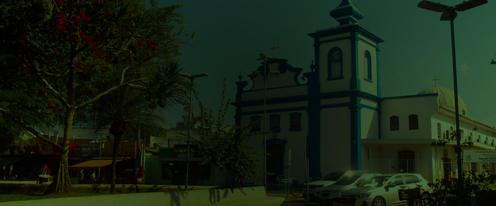
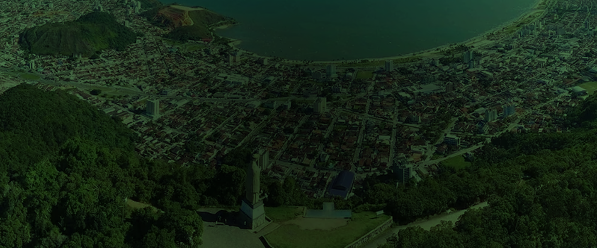

Ligue na secretaria de meio ambiente e tire suas dúvidas sobre o descarte correto de resíduos. Verifique os horários de funcionamento.
Preferencialmente, entre em contato por email. Responderemos o mais breve possível. Nosso endereço: Rua Santos Dumont, 502 – Centro